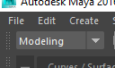
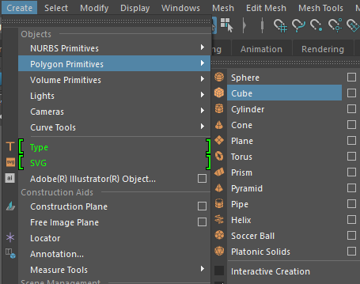
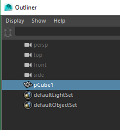
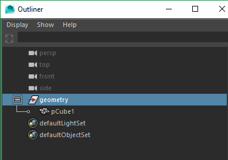
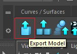

Understanding Maya + Anim + Cine2 in Luna
PART II
For my second lesson, I will show you how-to create a simple object from scratch in Maya and export that Model back into our Tools, so it can then be placed in a level.
1) Open Maya
2) Set the dropdown in the top left hand corner (below File, Edit, and Create) to "Modeling"

3) Create a primitive shape object...Click on Create -> Polygon Primitives -> (select a shape)

( the selected object should appear in the 3D view)
4) Open the Outliner (Windows -> Outliner)
5) Click on and highlight/ select the primitive shape itself (ex. pCone1, pHelix1, pCube1, etc)

6) Press [CTRL + G] to group the polygonal shape, then expand the newly created group.
7) Rename the group1 to "geometry"

8) Save the Maya Binary file in a location of the projects source folder:
(ex - X:\i20\devel\assets\source\test\)
9) Click on the Export Model icon in the top left hand corner (blue box with an upwards arrow) to export the edited model back into the Luna Tools.

10) Navigate to the Vault, search for and open the newly exported model.
AMAZING!! You have successfully created a brand-new production asset model.
-- Robert Cox (Production Support Technician)